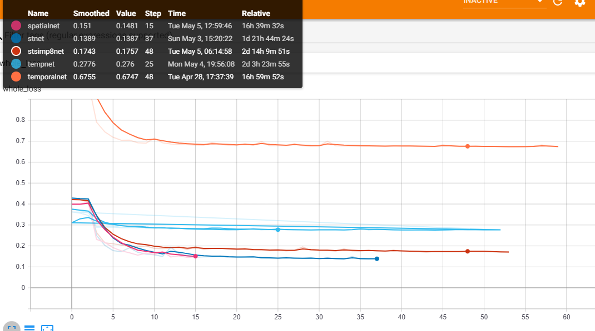

Phase 3: Motion encoding
Moving cube with fixed center
The test object is simple, it is a cube
Fixed center with moving camera

loss
Temporal
I made another graph with edges only connecting corresponding nodes across frames (bidirectional)
Specs:
- Layers: 4-64-64-64-64-3
- Loss: MSE + MAE
- Conv: GCN
- Activation: Leakyrelu
- Edges: temporal
Temporal one frame
Temporal frame
simpTemporal
One temporal step
Specs:
- Layers: 4-64-3
- Loss: MSE + MAE
- Conv: GCN
- Activation: Leakyrelu
- Edges: temporal
Simple temporal frame
Spatio-Temporal
Now we try gcn over both spatial within eachframe, and temporal across frames in an almost alternating fashion
Specs:
- Layer size: 64
- Loss: MSE + MAE
- Conv: GCN
- Activation: Leakyrelu
- Edges: s-s-t-s-s-t-s-s-t-s
st frame
st frames
simple Spatio-Temporal
Reduce temporal to 1
Specs:
- Layer size: 64
- Loss: MSE + MAE
- Conv: GCN
- Activation: Leakyrelu
- Edges: s-s-t-s-s
st simp
time todebug
Spatial
Reduce temporal to 1
Specs:
- Layer size: 64
- Loss: MSE + MAE
- Conv: GCN
- Activation: Leakyrelu
- Edges: s-s-t-s-s
st simp